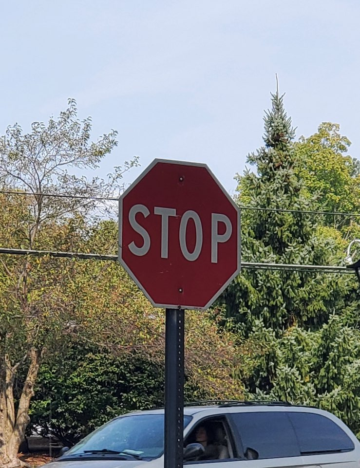
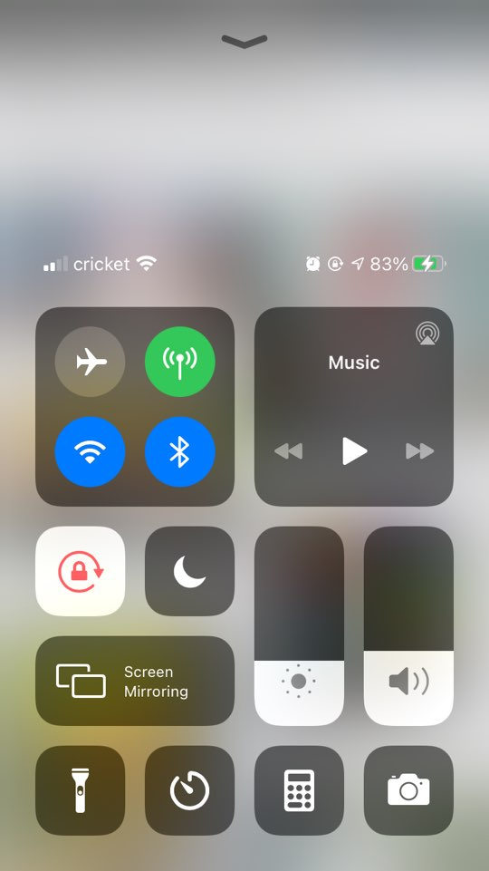

Affordance answers what are the possible actions. It is the relationship between what something looks like and how it is used. It determines what actions are possible.

I chose my laptop keyboard as a bad example of affordance. When I first bought it, I was not sure which button to press to power on. Then I figured that the power button is within the keyboard. Many laptops have separate power button located above the keyboard with distinct shape. However, my laptop's power button was within the keyboard and furthermore, it is not on the upper rightmost side but it is the second far-left next to the delete button which is confusing.
Signifiers answers how do people discover what to do. It determines where the action should take place.
This stop sign is a good example of a signifier. The red background and bolded white font make it easier to see and in traffic red signifies to stop. So, with the stop sign the act of cars stopping is signified, and the idea that color red is a command for vehicles to stop is the interpretant.
Mapping is the relationship between controls and actions.
This the control of screen brightness and sound loudness of an iphone is a goos example of mapping. We all know that swiping up raises the screen brightness and sound while down darkens the screen and lowers the sound. Because of our standards of up indicating more and down indicating less, this mapping works really well.
Feedback is an immediate response after an action has been executed.
I chose the dial sound effect as a good example of feedback. When you call someone, you get to hear the dialing sound which indicates that your call is going through and that you are waiting for the answer. When your signal is low you won't hear the dialing sound which indicates you have to move to a better signal zone.
Conceptual model is made of concepts which are used to help people know, understand, or use a subject the model represents. It is basically a mental model of how a product works.

This hand watch has a component of a bad example of conceptual model. The watch itself does a great job of displaying the exact time, but it has three buttons with no instructions or labels.